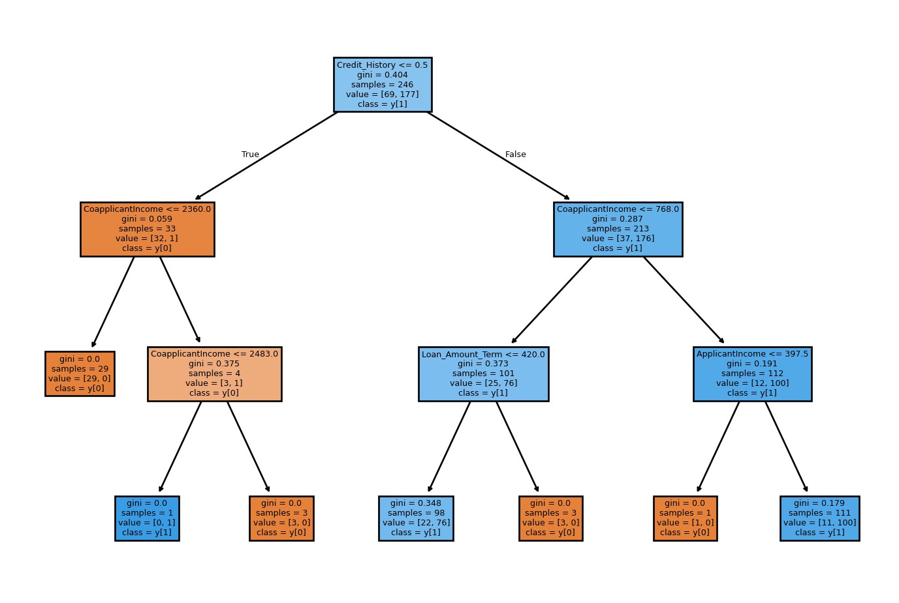

flowchart TD
A[Is it raining?] -->|Yes| B[Is it cold?]
A -->|No| C[Can you<br>hear bagpipes?]
C -->|Yes| D[<b>Scotland</b>]
C -->|No| E[Is anyone<br>wearing a kilt?]
B -->|Yes| F[<b>Scotland</b>]
B -->|No| G[<b>Not Scotland</b>]
E -->|Yes| H[<b>Scotland</b>]
E -->|No| I[<b>Not Scotland</b>]
Decision Trees for Classification
What is a decision tree?
Imagine you want to determine whether or not you are in Scotland, based on thing happening in your environment. Perhaps you start by asking if it is raining? If the answer is yes, it is probably very likely that you are in Scotland, but just to be sure that you aren’t in India during the monsoon season, you also check if it is cold. If the answer is also yes, then you determine you are in Scotland. Perhaps instead, it is not raining, but you can definitely hear bagpipes in the distance, then that’s also a tell tale sign you are in Scotland.
Decision trees work in essentially the same way. You start with some data, let’s say the loan application data set from Kaggle.
| Loading ITables v2.5.2 from the internet... (need help?) |
This dataset include various information about a given loan application from things like ApplicantIncome to Property_Area type. We can use this information to train a model that will predict whether or not a given loan is approved. The aim is to end up with a model that works in the same way as our example decision tree: we ask it some questions, traverse the tree, and end up at a final decision for each application.
How does the decision tree algorithm work?
The decision tree algorithm works by finding the best feature to split the data on, doing so successively until we reach our final model. A feature split can be something like whether Married is ‘Yes’ or ‘No’ or perhaps if ApplicantIncome is greater than 4000. The best split is determined using a metric like the gini impurity, which for binary classification ranges from 0 to 0.5, with 0 being a completely ‘pure’ node where all members are of the same class.
\[ \text{Gini Impurity} = 1 - \sum p_i^2 \]
An example function in python for calculating this would be,
def calc_gini_impurity(self, y):
if len(y) == 0:
return 0
class_counts = y.value_counts()
total_samples = len(y)
gini = 1.0
for count in class_counts:
probability = count / total_samples
gini -= probability * probability
return giniEach decision point is called a node. The first node is called the root node, and as the tree grows, each node that splits creates child nodes below it, making the original node a parent node. At every node in the tree, the algorithm checks all available features and all possible threshold values for those features to determine which split provide the best Gini impurity. The data is then split based on the optimal feature and threshold, before the algorithm moves to the newly created child nodes and repeats the exact same process.
This process continues until certain stopping conditions are met, such as when a node has perfect purity (all members are of the same class) or if a tree has reached a pre specified maximum depth. Leaf nodes are the final classification nodes at the bottom of tree branches. These determine the class assigned to a given data point. Leaf nodes can be completely pure, or, if a maximum tree depth has been reached, the value will be determined by whichever class is in the majority.
In the code
We can examine how we would train a decision tree on our loan data using Scikit-Learn.
import pandas as pd
import matplotlib.pyplot as plt
from sklearn.tree import DecisionTreeClassifier
from sklearn.model_selection import train_test_split
from sklearn.tree import plot_tree
data = pd.read_csv("./loan_data.csv")
data.drop(columns=['Loan_ID'], inplace=True)
data = data.dropna()
# replace '3+' with '3' in dependents column
data['Dependents'] = data['Dependents'].replace('3+', '3')
data['Dependents'] = data['Dependents'].astype(int)
X = data.drop(columns=['Loan_Status'])
y = data['Loan_Status']
X = pd.get_dummies(X, drop_first=True)
X_train, X_test, y_train, y_test = train_test_split(X, y, test_size=0.2, random_state=42)
tree = DecisionTreeClassifier(max_depth=3)
tree.fit(X_train, y_train)
plt.figure(figsize=(9, 6))
plot_tree(tree, filled=True, feature_names=X.columns, class_names=True)
plt.show()
Here we can see the final decision tree for this data. We have set max_depth = 3 so that the tree fits on the page and is easily interpretable, but this (obviously) reduces the quality of its predictions.
We can see that the root node splits the data on whether the applicant’s Credit_History is less than or equal to 0.5. Credit_History is a binary variable that takes 1 if an applicant’s credit history meets the guidelines and 0 otherwise. This means that the root node is therefore splitting on whether or not that applicant has passed a credit check. If they don’t meet the requirements, the tree then asks if the co-applicant’s income is less than or equal to 2360. If no, then the tree reaches a pure leaf node where all training instances are classified as “N” for Loan_Status. We can see that from the value = [29, 0] which means that at that node, there are 29 values with label “N” and 0 values with label “Y”. Class = y[0] means the majority class at this node is y[0] which in this case, means “N”.
from sklearn.metrics import accuracy_score
y_pred = tree.predict(X_test)
print(f"Model Accuracy: {accuracy_score(y_test, y_pred)* 100:.2f}%")Model Accuracy: 79.03%Due to the unbalanced nature of the dataset, just guessing “Y” every time would get an accuracy of 71.95% so this decision does have better performance than that baseline. Using the argument class_weight="balanced" and not restricting the tree depth gives us a better, and more interpretable model accuracy compared to just random guessing which with balanced classes would have an accuracy of 50%.
tree_balanced = DecisionTreeClassifier(class_weight="balanced")
tree_balanced.fit(X_train, y_train)
y_pred_balanced = tree_balanced.predict(X_test)
print(f"Balanced model Accuracy: {accuracy_score(y_test, y_pred_balanced)* 100:.2f}%")Balanced model Accuracy: 67.74%For more information on class imbalance, please refer to the chapter on logistic regression.
A python and C++ implementation of the DecisionTreeClassifer can be found on my github here.